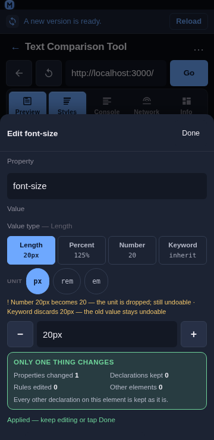
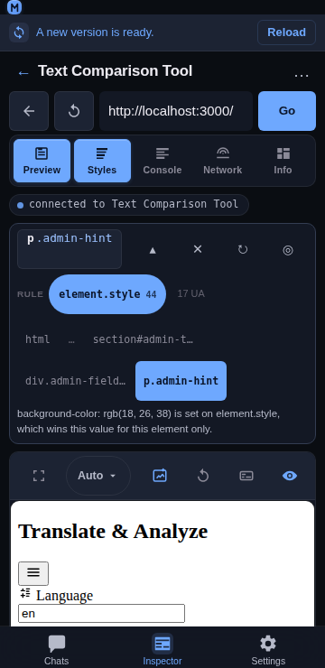

Inspector non-destructive editing
Overview
Every edit the Inspector makes lands on the selected element's own element.style, for one property. That is the safest target there is — it wins the cascade on that element and is fully reversible — but the panel used to say only “this row changed”, which answers neither what else did that disturb? nor how do I get back?. This feature makes both explicit: a scope summary before you commit, and a receipt afterwards with per-row and global undo.


Usage
Before committing: the scope summary
Open the edit sheet (tap a declared row or a quick-add chip). Above the actions, Only one thing changes reports what the upcoming write does:
| Properties changed | 1 — the one in the sheet |
| Declarations kept | every other declaration the element has |
| Rules edited | 0 — no stylesheet rule is touched |
| Other elements | 0 — the write addresses this element's own style object |
When the property is new to the element, the block says so: “Adds font-size to this element — it had no declaration of its own before.” That is the difference between overriding a value and introducing one, and it is worth knowing before you tap Apply.
After committing: the receipt
Each applied change appears in a strip at the top of the Styles panel:
2 changes ↺ Undo all
font-size — → 20px ↺
background-color — → rgb(18, 26, 38) ↺Newest first, because the thing you just did is the thing you are most likely to reverse.
The struck-through value is what the property had before this session touched it — not before the last Apply. Editing one property three times gives one line, and one ↺ returns to the original.
A property that was not declared before shows a dash, and undoing it removes the property rather than setting it to an empty value (the same to the browser, a different action to read back).
Every row has its own ↺, and Undo all reverses the whole list newest-first in one pass.
The strip renders nothing when there is nothing to undo, and it is cleared when the selection changes or is cleared — its entries name properties of the element that was selected, so undoing them against a new element would write to the wrong node.
Combined with the value-type switch
A type switch (16px → 1rem) is only a rewrite of the field until Apply, so it produces at most one receipt line for the property — and the receipt shows the value from before the switch, not the intermediate one.
Combined with the fan-out and the rail
A fan-out drag (padding: 10px 14px 18px 14px → 24px 14px 18px) and a rail drag each rewrite one property, so each is one receipt entry — including the fan-out, which is one shorthand declaration even though the browser expands it into four longhands. recordChange merges repeat edits on the same property and keeps the original from, so Undo all after a fan-out restores an element that had no padding of its own to exactly that state: no inline style at all, with the origin sentence back to naming the stylesheet rule. A fan-out whose sides cannot legally be collapsed (a var() side) is not rewritten from the view at all, and says why, rather than writing four longhands the user did not ask for.
Behaviour
Only one property can change per write. The write is
style.setProperty(prop, value)for the property in the sheet: it cannot rewrite the element's style block, and it cannot touch another element, because it addresses the resolved element's own style object rather than a selector.No stylesheet rule is edited. Rule-level editing needs
CSS.setStyleTextsplus stylesheet source parsing, which is not enabled;Rules edited 0is a statement of that, not a claim about intent. The rules are visible in the target bar and the Matched rules section.Undo restores the value, it does not “un-apply”. The plan is
setwith the remembered value, orremovewhen there was no previous declaration — so an element returns to the exact state it was in, including having no declaration at all.An edit that ends where it started leaves no trace. Typing
16px, then20px, then back to16pxremoves the entry, leaving nothing to undo — and applying the value a property already holds is not recorded either. The list never offers to reverse a change that is not there.The receipt is capped at 20 entries (oldest dropped) so a long session cannot grow the strip without bound.
The receipt is owned above the panels, and lives with the selection. The Styles panel records into it and renders its own strip from it, but the Inspector stores and reverses it: an entry is written by the panel (
onRecordChange), the list is rendered by both the panel's strip and the bar's copy, and undo runs in the Inspector against the retainedobjectId(undoEntryFromBar/undoAllFromBar) so it works while the panel is switched off. After an undo the Inspector re-reads the element and corrects its retained snapshot, then bumps a nonce which the panel watches to re-read its own copy — both the inline declarations and the matched-rules entry that carries the element's ownelement.stylerule, because a shorthand the CSSOM expanded is only findable through the second (see Inspector value rail).A failed revert reports on the panel's status pill and leaves the entry in place, so the change is not lost from the list just because the write failed.
Implementation notes
Pure model:
frontend/src/components/inspector/scope.jsexportsscopeSummary,recordChange,undoPlan,undoOrder,summarizeReceipt,receiptRows,describeChangeandMAX_RECEIPT. Plain objects in, plain objects out — no DOM, no CDP — so the counting, the merge rule (keep the originalfrom), the no-op collapse and the undo plan are all unit-testable.Wiring: the
Receiptcomponent lives infrontend/src/components/inspector/StylesPanel.jsxand the bar's smaller copy infrontend/src/components/inspector/TargetBar.jsx. The list itself is owned by the Inspector (Inspector.jsx:receipt,recordReceipt,undoEntryFromBar,undoAllFromBar), which is what lets the receipt — and its undo — outlive the Styles panel that made the writes. The previous value is read from the model before the write, because after it the value is gone.No new endpoints: undo uses the same
Runtime.callFunctionOnhelpers as an edit (style.setProperty/style.removeProperty), so an undo is a write like any other — which is also why it is recorded as one and re-reads the element afterwards.Mobile-first: every receipt row is a ≥44 px target with a 44 px ↺, the scope grid is two columns at 360 px, and neither surface scrolls horizontally.
Tests:
npm run test:inspectorcovers this withscripts/test-inspector-scope.js(62 assertions): the scope numbers including added-vs-overridden and case-insensitive matching, the receipt merge (re-editing keeps the original value), the no-op collapse, the cap, the undo plans (setvsremove), newest-first ordering without mutation, the row text for an added and a removed property, and the panel wiring (the previous value is read before the write, undo goes through the plan, the changed set is updated, and the receipt is cleared on a selection change and on Clear).scripts/test-inspector-styles-order.jsadditionally pins that a selection change clears both the change set and the receipt.
Related
Inspector Styles panel — tap-to-select, inline editing, matched rules, computed values.
Inspector target bar — which element and which rule an edit lands on.
Inspector value types — switching a value between length, number, percentage and keyword.